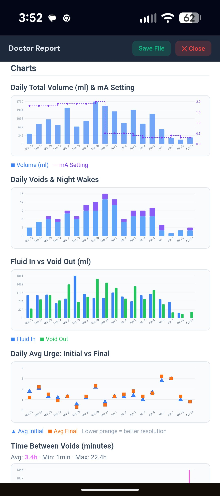

Personal Independence
Bladder-health diary — built for patients, readable by urologists.
Personal Independence is a self-contained web app for bladder-health self-tracking, designed to help patients manage overactive bladder by turning their daily experience into something measurable. Patients log voids (time, volume, urgency, accidents, nocturia), fluid intake, and neuromodulation stimulation-program changes. The app converts those entries into easy-to-read trend charts — showing voiding frequency, volume patterns, fluid-intake correlation, and how urgency episodes distribute across the day — so that both patient and clinician can see at a glance what is changing and what is not.
Try Personal Independence Install guide
The clinical report
The Report tab produces the artifact a urologist can actually read — printable, saveable as PDF, or forwardable ahead of an appointment. Everything else in the app is in service of making this report complete, accurate, and legible.
- Voiding pattern charts — void frequency and volume over time, with trend lines.
- Fluid intake overlay — intake volume correlated with voiding pattern across the same time axis.
- Void-type breakdown — proportions of normal voids, urgency episodes, accidents, and nocturia events over the reporting period.
- Neuromodulation program history table — stimulation amplitude (mA) by program stage, with date of each change and clinical notes.
- Summary statistics — average void frequency per day, average volume, nocturia episodes per night, accident rate.
- All charts are SVG, rendered without external dependencies — works offline and prints cleanly.

The report's Charts section on an Android phone — daily volume correlated with stimulation amplitude, void frequency and nocturia, fluid intake vs void output, and urge resolution over a 16-day period.
What goes into the report
Every entry is captured with the context that makes it clinically useful — not just a timestamp, but a complete picture of what the patient was experiencing and managing at the time.
- Voids — time, estimated or measured volume (ml), and a type classification: normal void, urgency void, accident, or nocturia. Volume presets (Small 50 ml through XXL 500 ml) make entry fast.
- Fluid intake — beverage type, volume, and optional notes (e.g., caffeinated, alcoholic). Intake is timestamped and shown alongside voids in the report.
- Neuromodulation / stimulation program history — amplitude (mA) per program stage, with date, program designation (P1–P4 or custom), and free-text clinical notes for each adjustment. Designed for patients on sacral neuromodulation and other implanted neurostimulation therapies.
- Void notes — free text attached to any individual void entry for patient-reported context.
Why patients will use it
A voiding diary only has clinical value if patients log faithfully between appointments — not just the day before. The app is designed for low-friction daily use, with optional features that support consistency over weeks and months.
- Demo mode, on by default, shows 16 days of realistic sample data — voids, intake, and a true clinical stimulation-program narrative (amplitude starting at 1.8 mA, four program transitions, settling at 0.3 mA). New patients and their providers can explore the full workflow before entering anything real. Fully isolated from real data.
- Streak tracking and achievement badges — gentle reinforcement for consistent logging. Fifteen PI-specific achievements (first log, 7-day and 30-day streaks, accident-free week, program documenter, and more). Adjustable or fully disabled; the gamification layer never gates data access.
- In-app Help tab and optional AI Help Bot for usage questions. The bot explicitly declines to offer medical advice.
- Runs on any phone, tablet, or desktop — installs from the browser to the home screen or taskbar in one tap, works offline after first install, no app store required.
- CSV export — voiding log, intake log, and stimulation history, all exportable separately for data portability or backup.
- Emergency export — if device storage fails, three one-tap exports pull data directly from app memory so nothing is lost.
Provider-controlled features
The following features are designed to be configured by the patient's healthcare provider or practice.
- Practice identity Available now
Provider name, logo, contact information, and a brief practice descriptor appear in the generated clinical report — making the report legible as coming from a specific practice context. - Gamification configuration Available now
Achievement tracking and streak reinforcement can be enabled, configured, or disabled at the provider level. Practices that prefer a clinical-only experience can suppress the gamification layer entirely. - Help Bot capacity override Available now
The AI Help Bot defaults to a 10-question lifetime cap per install. Providers can issue a signed override code to raise or reset that cap for a specific patient without requiring account creation or network sync.
Copyright © 2026 Alan H. Jordan. All rights reserved.